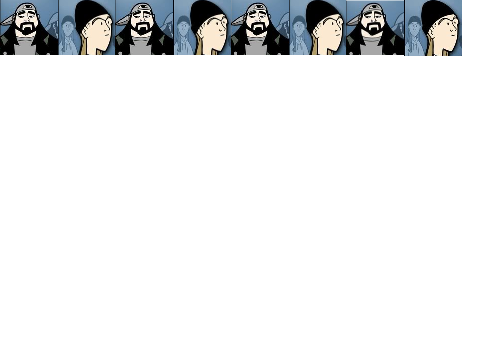

Quick


Reflections on Writing a Fuzzy Search Function in Vanilla JS
Published on March 13, 2017
Reflections on the simplest of JavaScript Apps
Published on March 9, 2017
Reflections on a Stacked Bar Chart with D3.js
Published on March 9, 2017
Reflections on a Grouped Bar Chart with D3.js
Published on March 9, 2017
Reflections on a Horizontal Bar Chart with D3.js
Published on March 5, 2017
Reflections on a Multi-series Line Chart with D3.js
Published on March 5, 2017
Reflections on 52 Line Charts with D3.js
Published on March 4, 2017